방사선비파괴검사기사(구) (2008-03-02 기출문제)
1과목: 방사선투과시험원리
1. 공업용 X선 발생장치에서 연속 X선이 발생되는 주요기전(mechanism)은?
- 광전효과
- 컴프턴산란
- 전자쌍생성
- 제동복사
(정답률: 알수없음)

2. 방사선 선원의 발출이 2m 거리에서 시간당 100렌트겐 일 때 6m 거리에서의 방사선량은 약 얼마인가?
- 3R/h
- 11R/h
- 17R/h
- 33R/h
(정답률: 알수없음)
3. 다음 중 미소 결함에 대한 투과사진의 콘트라스트를 높이는데 필요한 내용으로 옳은 것은?
- 가능한 한 감마값이 낮은 X-선 필름을 사용한다.
- 가능한 한 사진농도를 낮게 촬영한다.
- 가능한 한 높은 X-선 관전압을 사용하여 촬영한다.
- 가능한 한 산란선이 적어지도록 작업한다.
(정답률: 알수없음)
4. 다음 중 기공(blow hole)은 금속 가공의 어느 과정에서 주로 발생하는가?
- 용접
- 단조
- 압출
- 압연
(정답률: 알수없음)
5. 다음 중 중성자의 투과가 가장 큰 물질은?
- 플라스틱
- 물
- 납
- 보론카바이드
(정답률: 알수없음)
6. X선발생장치의 사용에 대한 안정상 주의점을 설명한 것으로 틀린 것은?
- 조리개와 필터는 산란선이나 연속 X선의 피폭을 방지하기 위해 부착한다.
- X선발생장치의 제어기는 고열이 발생하므로 사용 후 커버를 벗겨서 냉각시켜 준다.
- X선장치를 사용할 때는 서베이미터 및 개인 안전장구를 휴대하여야 한다.
- X선의 발생이나 장치의 안전확인은 복수의 방법으로 행하여야 한다.
(정답률: 알수없음)
7. γ선의 에너지가 높아짐에 따라 일어날 수 있는 변화로 틀린 것은?
- 흡수계수가 커진다.
- 파장이 짧아진다.
- 반가층이 커진다.
- 투과력이 커진다.
(정답률: 알수없음)
8. X선발생장치의 사용에서 다른 조건은 변화시키지 않고 X선 관전압만을 높였을 때의 변화로 옳은 설명은?
- 강도에 따른 파장 곡선에서 최단 파장이 더욱 짧은 쪽으로 이동한다.
- 강도에 따른 파장 곡선에서 최고 강도 부분의 파장이 긴 쪽으로 이동한다.
- 물질에서 투과 능력이 떨어진다.
- 낮은 에너지의 약한 X선을 발생시킨다.
(정답률: 알수없음)
9. 선원과 시험체간 거리가 125cm이고, 시험체와 필름까지의 거리가 8cm, 선원의 크기가 0.5cm라면 기하학적 불선명도(반영)의 크기는?
- 0.011cm
- 0.032cm
- 0.128cm
- 0.782cm
(정답률: 알수없음)
10. 투과사진의 결함에 의한 농도차(D2-D1)를 △D, 식별한계 콘트라스트를 △Dmin이라 할 때 다음 식 중에서 결함이 식별되지 않는 경우는?
- △D=△Dmin
- △D=△Dmin×1.1
- △D＜△Dmin
- △D＞△Dmin
(정답률: 알수없음)
11. 방사선투과시험에 요구되는 인자 중 기하학적 불선명도에 대한 설명이다. 옳은 것은?
- 기하학적 불선명도는 항상 2% 이상이어야 한다.
- X선장치의 초점크기가 클수록 기하학적 불선명도는 작아진다.
- 기하학적 불선명도는 선원-시험체 또는 시험체-필름간 거리를 조정하여 작게 할 수 있다.
- 초점크기가 일정하면 기하학적 불선명도는 다른 요인에 관계없이 항상 동일한 크기를 나타낸다.
(정답률: 알수없음)
12. 방사선투과시험을 적용할 때의 제한사항을 나열한 것이다. 틀린 것은?
- 결함의 형태에 따라 검출이 곤란한 경우가 있다.
- 시험체의 두께에는 제한이 없으나 차폐를 해야 한다.
- 시험체 표면의 미세한 균열을 검출하는 데는 곤란한 경우가 많다.
- 방사선에 의한 인체의 장해가 발생할 수 있다.
(정답률: 알수없음)
13. 다음 중 2차 방사선 또는 산란방사선의 영향을 줄이기 위해 시험체 주위에 놓는 고밀도의 물질은?
- 필터
- 마스크
- 카세트
- 납증감지
(정답률: 알수없음)
14. 방사선투과검사용 동위원소의 여러 특성 중 비방사능은 고유비방사능과 실비방사능으로 구분된다. 다른 동위원소 중에서 고유비방사능이 가장 큰 것은?
- Co-60
- Cs-137
- Ir-192
- Ir-170
(정답률: 알수없음)
15. TLD에 사용하는 열형광 물질이 아닌 것은?
- LiF
- CaSO4
- CaF2
- NaI
(정답률: 알수없음)
16. 다음 중 감마선 조사기를 사용할 때의 주의사항이 아닌 것은?
- 컨테이너의 앞마개, 뒷마개가 분실되지 않도록 한다.
- 내부 잠금 쇠뭉치를 주기적으로 청소하여야 한다.
- 원격조정기 사용시 핸들 손잡이의 회전수를 정확히 파악하여 더 많이 밀거나 잡아당기지 않도록 한다.
- 규정된 정격 퓨즈와 높은 관전압을 사용하여야 한다.
(정답률: 알수없음)
17. 다음 중 시험체 내부의 불균일 여부에 따라서 방사선의 투과량이 다른 것을 이용하여 시험체 내부의 불균일 여부를 알아 볼 수 있는 것은?
- α선
- β선
- 전자기선
- 중성자선
(정답률: 알수없음)
18. 방사선투과 촬영에서 M1ㆍT1=M2ㆍT2의 관계로부터 노출시간의 감소는 전류가 증가하므로 보상된다. M1ㆍT1=M2ㆍT2=C 라 할 때 이를 무슨 법칙이라 하는가? (단, M1, M2는 전류 T1, T2는 노출시간, C는 상수(constant)이다.)
- 상호법칙
- 노출인자 계산법칙
- 등가계수 환산법칙
- 노출인자의 보간법칙
(정답률: 알수없음)
19. 그림과 같이 100mAㆍs의 노출량으로 A타입의 필름을 촬영하여 사진농도 1.5를 얻었을 때, 촬영배치의 변화없이 B타입의 필름으로 사진농도 2.0을 얻으려면 필요한 노출량은 얼마인가?
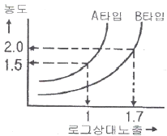
- 50mAㆍs
- 250mAㆍs
- 400mAㆍs
- 500mAㆍs
(정답률: 알수없음)
20. 다음 중 피사체 콘트리스트에 영향을 미치지 않는 것은?
- 시험체의 두께차
- 방사선 선질
- 산란방사선
- 투과도계
(정답률: 알수없음)
2과목: 방사선투과검사
21. 납판 중앙에 작은 구멍을 뚫어 X선발생장치와 필름 중간지점에 설치한 후 촬영하는 목적을 옳게 설명한 것은?
- 연속 X선을 여과하기 위함이다.
- 초점의 크기를 측정하기 위함이다.
- 방출되는 중심선의 강도를 측정하기 위함이다.
- 방출되는 X선의 강도분포를 측정하기 위함이다.
(정답률: 알수없음)
22. 방사선투과검사에서 형광증감지를 사용할 때의 장점을 설명한 것으로 틀린 것은?
- 명료도가 향상된다.
- 강화인자가 커진다.
- 노출시간을 감소시킨다.
- .저선질로 두꺼운 물체를 촬영할 수 있다.
(정답률: 알수없음)
23. X선발생장치의 유리관속을 진공으로 하는 이융의 설명으로 틀린 것은?
- 전극간의 전기적 절연을 위하여
- 필라멘트의 산화를 방지하기 위하여
- 필라멘트의 연소를 방지하기 위하여
- 고속전자의 에너지 손실을 방지하기 위하여
(정답률: 알수없음)
24. 제조 후 5개월이 경과한 Ir-192 선원을 사용하려 한다. 제조 당시의 비해 방사선강도가 얼마나 감소하였겠는가?
- 1/2
- 1/4
- 1/8
- 1/16
(정답률: 알수없음)
25. X선발생장치의 X선관에 대한 설명으로 틀린 것은?
- 음극선 전자발생원인 필라멘트가 있어야 한다.
- 양극으로 융점이 높고, 낮은 원자번호를 가진 표적금속이 있어야 한다.
- 표적 금속을 냉각시키는 냉각장치 계통이 필요하다.
- 음극선 전자를 가속하기 위한 고전압원이 필요하다.
(정답률: 알수없음)
26. 다음 중 Ir-192로 강철을 촬영할 때 필름 상에 판독 가능한 영상을 얻기 위한 두께로 가장 적합한 것은?
- 7cm
- 15cm
- 20cm
- 30cm
(정답률: 알수없음)
27. 방사선투과검사를 통해 결함의 깊이를 알고자 할 때 사용되는 검사 방법으로 가장 적합한 것은?
- Micro Radiography법
- Flash Radiography법
- Electron Radiography법
- Parallax Radiography법
(정답률: 알수없음)
28. 다음 중 X선 회절법에 의한 비파괴검사법으로 판단하기 가장 어려운 것은?
- 결정내의 면간구조
- 결함의 크기
- 원자 반경
- 원자 배치
(정답률: 알수없음)
29. 정착과정에서 티오황산염과 할로겐화은과의 반응은 어떤 역할을 하기 위한 것이 주목적인가?
- 브롬을 제거하는 역할을 한다.
- 현상용액에서 묻은 알칼리를 중화시킨다.
- 현상되지 않은 은입자를 제거하는 역할을 한다.
- 브롬화은(AgBr)에서의 은염을 검게 하는 역할을 한다.
(정답률: 알수없음)
30. 방사성 물질을 방사선투과검사할 때 가장 효과적인 검사법은?
- Stereo radiography method
- Neutron radiography method
- High-speed radiography method
- X-ray diffraction method
(정답률: 알수없음)
31. 방사선투과검사의 현상처리에 대한 설명 중 옳은 것은?
- 정지액은 일반적으로 5~10℃의 차가운 온도를 유지하고 현상액과 중화하여 사용하여야 한다.
- 정착액의 온도는 일반적으로 18~24℃ 정도를 유지하는 것이 바람직하다.
- 암실의 온도는 일반적으로 30℃ 이상을 유지하여야 하며, 상대습도는 25% 이하로 건조해야 좋다.
- 정착한 후 흐르는 물에 예비수세시 아황산소다의 2% 용액에 침치하면 수세시간을 충분히 연장할 수 있다.
(정답률: 알수없음)
32. 탱크현상법을 접시현상법과 비교한 장단점을 설명한 것으로 옳은 것은?
- 탱크현상법은 접시현상법보다 공기산화가 심하다.
- 탱크현상법은 접시현상법보다 액온 조절이 용이하다.
- 탱크현상법은 접시현상법보다 현상 진행속도가 느리다.
- 탱크현상법은 접시현상법보다 조작이 어려우므로 고도의 검사 숙련자만이 취급할 수 있다.
(정답률: 알수없음)
33. 방사선투과검사시 미소 결함에 대한 투과사진 콘트라스트를 높이기 위해 미소 두께 차에 대한 고려가 필수적이다. Ir-192를 사용하여 촬영하는 경우 두께 차를 위한 두께(T)와 산란비(n)와의 관계를 근사적으로 나타낸 것으로 옳은 것은?
- n≒0.075T
- n≒0.025T
- n≒0.1T
- n≒0.2T
(정답률: 알수없음)
34. 다음 중 step wedge를 이용하여 측정하였을 때 알 수 없는 것은?
- 시험체의 반가층
- 방사선원의 질량
- 시험체의 노출도표
- 시험체의 선형흡수계수
(정답률: 알수없음)
35. 현상처리된 필름을 보관할 때 고려할 내용으로 틀린 것은?
- 화학증기가 존재하는 곳은 피하여야 한다.
- 실온의 장소로 가시광선을 직접 받는 곳에 보관하여야 한다.
- 온도의 습도가 자주 변하는 장소에 보관하는 것은 피하여야 한다.
- 필름사이는 간지를 끼워 보관하는 것이 좋다.
(정답률: 알수없음)
36. 감마선조사장비에서 X-선관의 후드(Hood) 및 창(Window)의 역할을 하는 것은?
- 콜리메터(Collimator)
- 가이드 튜브(Guide Tube)
- 드라이브 케이블(Drive Cable)
- 저장 용기의 앞 연결부(Connector)
(정답률: 알수없음)
37. X선발생장치의 올바른 유지관리 방법으로 틀린 것은?
- 충분한 예열로 급격한 열충격을 피한다.
- 장시간 사용하지 않던 장비는 예열시간을 길게 한다.
- X선관에 많은 부하가 걸리도록 하여 휴지시간(Duty cycle) 이상을 사용한다.
- X선발생장치의 사용율을 높이기 위해 X선관은 진공으로하며, 양극은 충분히 냉각시킨다.
(정답률: 알수없음)
38. 그림의 필름특성곡선에서
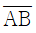
의 평균 필름콘트라스트를 구하면 약 얼마인가?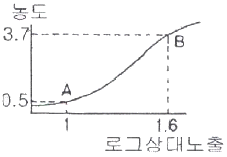
- 0.1
- 0.8
- 5.3
- 7.4
(정답률: 알수없음)
39. 방사선투과검사시 투과사진에서 볼 수 있는 인공결함(Artifact) 중 노출 후에 필름이 구겨졌을 때 현상처리한 필름에 나타나는 결함의 형상은?
- 뿌연 안개 모양
- 불규칙한 줄무늬
- 검은 반점과 날카로운 검은 선
- 주위보다 짙은 농도의 초승달 형태
(정답률: 알수없음)
40. X선발생장치에서 관전류를 증가시켰을 때의 설명으로 옳은 것은?
- 필라멘트의 온도가 올라가고, 초점의 온도도 올라가며, 방사선의 양도 많아진다.
- 필라멘트에 흐르는 전류는 적어지나 방사선에너지는 높아진다.
- 필라멘트의 온도는 내려가나 방사선에너지가 높아지며, 투과력은 강해진다.
- 필라멘트에 흐르는 전류가 많아지고, X선의 파장이 길어진다.
(정답률: 알수없음)
3과목: 방사선안전관리,관련규격및컴퓨터활용
41. 1rad(리드)를 SI 단위로 올바르게 나타낸 것은?
- 1R
- 10-2Gy
- 1000Sv
- 10J/kg
(정답률: 알수없음)
42. 방사선 조사선량의 단위인 R(Roentgen)을 옳게 나타낸 것은?
- 1R=2.58×104C/kg(공기)
- 1R=10-2J/kg(공기)
- 1R=100erg/g(공기)
- 1R=3.7×1010dps/g(공기)
(정답률: 알수없음)
43. 어느 작업자가 60mrem/h의 방사선이 나오는 곳에서 2시간 30분간 작업하였다. 이 작업자의 총 피폭선량(mrem)은 얼마인가?
- 60
- 120
- 150
- 180
(정답률: 알수없음)
44. 1μCi에 해당되는 것으로 옳은 것은?
- 1kBq
- 37kBq
- 1kBq
- 37kBq
(정답률: 알수없음)
45. 원자력법 시행령에서 정한 방사선관리구역 수시출입자에 대한 수정체의 연간 등가선량한도로 옳은 것은?
- 12mSv
- 15mSv
- 30mSv
- 50mSv
(정답률: 알수없음)
46. 원자력법 시행규칙에 따르면 방사선안전관리의 기록에 관해 방사성동위원소등의 사용자는 방사선작업종사자가 당해 업무에 종사하기 이전의 건강진단기록 및 방사선 피폭경력을 언제까지 보존해야 하는가?
- 1년간 보존한다.
- 5년간 보존한다.
- 10년간 보존한다.
- 사용을 폐지할 때까지 보존한다.
(정답률: 알수없음)
47. 비파괴검사용 화질지시계-원리 및 판정(KS A 4⑤4)의 투과도계 호칭번호에 따른 제일 가는 선과 제일 굵은 선의 지름을 바르게 나타낸 것은?
- 04X : 가는 선은 0.1mm, 굵은 선은 0.4mm
- 08X : 가는 선은 0.1mm, 굵은 선은 0.8mm
- 16X : 가는 선은 0.2mm, 굵은 선은 1.6mm
- 32X : 가는 선은 0.4mm, 굵은 선은 1.6mm
(정답률: 알수없음)
48. 강 용접이음부의 방사선투과 시험방법(KS D 0845)에서 바깥지름 150mm, 두께 25mm인 관을 상질의 종류 A급으로 하여 내부선원 촬영방법으로 촬영하고자 한다. 이 조건에서 사용하여야 하는 계조계의 종류는?
- 15형
- 20형
- 25형
- 30형
(정답률: 알수없음)
49. 보일러 및 압력용기에 대한 방사선투과검사(ASME Sec. V Art.2)에 따라 관의 촬영시 단일벽 촬영기법의 적용이 곤란하여 이중벽 촬영기법을 적용할 때 원주 용접부의 전 구간 촬영범위가 요구될 때 단일벽 관찰시의 내용으로 옳은 것은?
- 360도 전체를 최소 1회 촬영 실시
- 180도 간격으로 최소 1회 촬영 실시
- 120도 간격으로 최소 3회 촬영 실시
- 90도 간격으로 최소 2회 촬영 실시
(정답률: 알수없음)
50. 원자력법에 의해 원자력이용시설의 방사선작업종사자에 대한 건강진단을 실시할 경우 반드시 검사를 해야 하는 내용은?
- 말초혈액 중의 백혈구, 적혈구의 수 및 혈당량
- 말초혈액 중의 백혈구, 혈장의 양 및 심폐 기능
- 말초혈액 중의 백혈구, 적혈구의 수 및 신장 기능
- 말초혈액 중의 백혈구, 적혈구의 수 및 혈색소의 양
(정답률: 알수없음)
51. 강 용접이음부의 방사선투과 시험방법(KS D 0845)에 따라 강 용접부를 검사할 때 모재 두께가 50mm 인 투과사진의 1종 결함을 관찰하여야 할 시험시야의 크기로 옳은 것은?
- 10×10mm
- 10×20mm
- 10×30mm
- 10×40mm
(정답률: 알수없음)
52. 강 용접이음부의 방사선투과 시험방법(KS D 0845)에 따라 강관의 원둘레 용접이음부를 내부선원 촬영방법으로 원둘레를 동시 촬영할 경우 투과도계 및 계조계 촬영배치 방법으로 옳은 것은?
- 2개의 투과도계를 3시, 9시 방향에 두고, 2개의 계조계를 6시, 12시 방향에 둔다.
- 2개의 투과도계를 6시, 12시 방향에 두고, 2개의 계조계를 3시, 9시 방향에 둔다.
- 3개의 투과도계 및 계조계를 각각 원둘레를 거의 3등분하여 대칭의 위치에 둔다.
- 4개의 투과도계 및 계조계를 각각 원둘레를 4등분하여 대칭의 위치에 둔다.
(정답률: 알수없음)
53. 보일러 및 압력용기에 대한 방사선투과검사(ASME Sec. V Art.2)에 따라 18.8mm 두께인 강용접부를 단일벽 관찰로 촬영하였더니 투과도계의 0.89mm 직경인 2I 구멍이 보였다. 이 투과계도의 두께는 약 얼마인가?
- 0.09mm
- 0.18mm
- 0.45mm
- 0.89mm
(정답률: 알수없음)
54. 보일러 및 압력용기에 대한 방사선투과검사(ASME Sec. V Art.2)에 따른 필름 콘트라스트에 영향을 미치는 주요 인자가 아닌 것은?
- 필름타입
- 현상조건
- 농도
- 산란 방사선
(정답률: 알수없음)
55. 보일러 및 압력용기에 대한 표준방사선투과검사(ASME Sec. V Art.22. SE-1025)에는 투과도계 모양을 시험재료의 그룹별로 사용토록 규제하고 있다. 그림과 같은 형태의 투과도계를 사용해야 하는 경우로 옳은 것은?
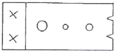
- Group 1 물질(탄소강)
- Group 2 물질(알루미늄브론즈)
- Group 3 물질(니켈-크롬-철합금)
- Group 4 물질(니켈-구리합금)
(정답률: 알수없음)
56. 원격 컴퓨터에서 파일을 송ㆍ수신하는데 사용하는 프로토콜로 옳은 것은?
- Gopher
- Finger
- FTP
- Telnet
(정답률: 알수없음)
57. 다음이 설명하고 있는 인터넷 보안 방식은?
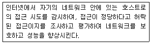
- Cache
- Web Cache
- Firewall
(정답률: 알수없음)
58. 라디오, Pager(호출기)와 같이 데이터를 한 쪽 방향으로만 전달하는 통신 방식은?
- 전이중 통신방식(Full-Duplex)
- 반이중 통신방식(Half-Duplex)
- 단방향 통신방식(Simplex)
- 직렬 전송방식(Serial Transmission)
(정답률: 알수없음)
59. 검색을 위한 자신만의 데이터베이스는 없고 다른 검색엔진에서 결과를 찾아서 사용자에게 보여주는 검색방식을 무엇이라고 하는가?
- 웹 인덱스 방식
- 키워드 방식
- 웹 디렉토리 방식
- 통합형 검색 방식
(정답률: 알수없음)
60. 네트워크 사용자들끼리 뉴스를 서로 주고받는 네트워크 뉴스 그룹은?
- WAIS
- Archie
- Usenet
- inter-casting
(정답률: 알수없음)
4과목: 금속재료학
61. 황동의 자연균열(season crack)을 방지하기 위한 방법을 설명한 것 중 틀린 것은?
- 도료나 아연도금을 한다.
- 응력제거 풀림을 한다.
- Sn 이나 Si를 첨가한다.
- Hg 및 그 화합물을 첨가한다.
(정답률: 알수없음)
62. 형상기억효과의 종류 중 전방위 형상기억에 대한 설명으로 옳은 것은?
- 일반적인 일방향 형상기억합금이며, 오스테나이트상의 형상만을 기억하는 현상이다.
- 오스테나이트의 형상과 더불어 마텐자이트상이 변형되었을 때의 형상도 기억하는 현상이다.
- 변형상태에서 시효시키면 나타나는 현상으로 온도에 따라 오스테나이트상으로부터 중간상을 거쳐 저온상으로 변태하며 이 때 마텐자이트 변태도 동반되는 현상이다.
- 열탄성 마텐자이트 변태에 기인하며 초탄성에 의한 형상기억 효과는 응력부하온도에 의존하는 현상으로 응력유기 마텐자이트가 외부응력이 제거되면서 오스테나이트로 변태함으로 생기는 현상이다.
(정답률: 알수없음)
63. 순철이 Ac3에서 동소변태한 경우 이 때의 격자상수는 어떻게 되는가?
- 작아진다.
- 커진다.
- 변화가 없다.
- 가열속도에 따라 변화한다.
(정답률: 알수없음)
64. 가음 중 쾌삭강(free cutting steel)의 피삭성을 증가시키는 합금 원소는?
- C
- Si
- Ni
- Se
(정답률: 알수없음)
65. 공석강을 A1 온도 이상으로 가열한 후 차차 온도를 떨어뜨리면서 각 온도에서 등온변태하였을 때의 반응생성물의 순서가 옳은 것은?
- Pearlite→Upper Bainite→Lower Bainite→Martensite→잔류 Austenite
- Martensite→Upper Bainite→Lower Bainite→Pearlite→잔류 Austenite
- Pearlite→잔류 Austenite→Lower Bainite→Martensite→Upper Bainite
- Martensite→Lower Bainite→Upper Bainite→잔류 Austenite→Pearlite
(정답률: 알수없음)
66. 다음 중 해드필드 강(hadfield steel)의 설명으로 옳은 것은?
- Austenite계 고 Mn 강이며, 가공경화성이 크다.
- Pearlit계 저 Mn 강이며, 가공경화성이 적다.
- Austenite계 고 Mg 강이며, 가공경화성이 크다.
- Pearlit계 저 Mg 강이며, 가공경화성이 적다.
(정답률: 알수없음)
67. Al의 특징을 열거한 것 중 틀린 것은?
- 비중이 2.7로서 가볍다.
- 내식성, 가공성이 좋다.
- 면심입방격자(FCC)이다.
- 지금(地金) 중의 Fe, Cu, Mn 등의 원소는 도전율을 좋게 한다.
(정답률: 알수없음)
68. 적색을 띤 회백색의 금속으로 비중이 9.75, 용융점이 265℃이며, 특히 응고할 때 팽창하는 금속은?
- Ce
- Bi
- Te
- In
(정답률: 알수없음)
69. 단면적 20mm2인 환봉을 인장시험한 그래프이다. A점에서의 단면적은 18mm2, B점에서의 단면적은 16mm2이었을 때 인장강도(kgf/mm2)는?
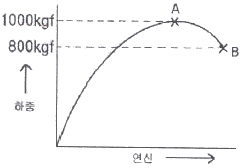
- 25
- 50
- 56
- 63
(정답률: 알수없음)
70. 탄소강 중에 존재하는 합금 원소가 기계적 성질에 미치는 영향을 설명한 것 중 옳은 것은?
- Mn은 강도를 증가시키나, 연신물의 증가로 경도를 감소시키고, 고온에서 소성을 감소시켜 주조성을 좋게 한다.
- Cu는 인장강도, 탄성한계를 높이나. 부식에 대한 저항성을 감소시킨다.
- Si는 입자의 크기를 증대신키며, 경도, 탄성한계등을 높인다.
- 강 중의 S는 Mn과 결합하여, MnS를 만들고 저온취성의 원인이 된다.
(정답률: 알수없음)
71. 오스테나이트계 스테인리스강에 대한 설명으로 틀린 것은?
- 대표적인 조성은 18%Cr-8%Ni이다.
- 자성체이며, BCC의 결정구조를 갖는다.
- 오스테나이트조직은 페라이트조직보다 원자밀도가 높아 내식성이 좋다.
- 1100℃ 부근에서 급냉하는 고용화처리를 하여 균일한 오스테나이트조직으로 사용한다.
(정답률: 알수없음)
72. 용융금속을 세공을 통하여 유출시켜 그 가느다란 흐름을 압력이 걸려있는 물, 공기 혹은 불활성 가스로 빠르게 끊어 금속분말을 제조하는 방법은?
- 분사법(atomization)
- 쇼팅(shotting)
- 스템핑(stamping)
- 그레이닝(graining)
(정답률: 알수없음)
73. 0.2% 탄소강이 723℃ 선상에서의 초석 ferrite 와 pear-lit 양은 약 몇 %인가? (단, 공석점의 탄소함량은 0.8%이다.)
- 초석 Ferrite 75%, pearlite 25%
- 초석 Ferrite 25%, pearlite 75%
- 초석 Ferrite 55%, pearlite 45%
- 초석 Ferrite 45%, pearlite 55%
(정답률: 알수없음)
74. 백주철을 탈탄열처리하여 순철에 가까운 ferrite 가지로 만들어 연성을 갖는 주철은?
- 펄라이트가단주철
- 흑심가단주철
- 백심가단주철
- 구상흑연주철
(정답률: 알수없음)
75. 연성과 전성이 좋은 황동으로서 색깔도 아름다우며 장식용 잡화나 악기 등의 재료로 쓰이고, 금박(金箔)의 대용으로 쓰이는 재료로서 Cu와 Zn이 8:2로 합금된 것은?
- 톰백(tombac)
- 문츠메탈(muntz metal)
- 하이 브라스(high brass)
- 카트리즈 브라스(cartridge brass)
(정답률: 알수없음)
76. 열처리에서 질량효과(Mass effect)에 대한 설명으로 옳은 것은?
- 가열시간의 차이에 따라 재료의 내ㆍ외부가 뒤틀리는 현상
- 재료의 크기에 따라 담금질 효과가 다르게 나타나는 현상
- 시효처리의 일종으로서 재료가 크면 내부의 경도가 외부 경도에 비해 떨어지는 현상
- 뜨임현상의 일종으로서 뜨임 시간이 길어지면 재료 내ㆍ외부에 경도가 달라지는 현상
(정답률: 알수없음)
77. Mg 합금이 구조재료로서 갖는 특성을 설명한 것 중 틀린 것은?
- 소성가공성이 높아 상온변형이 쉽다.
- 비강도가 커서 항공우주용 재료에 유리하다.
- 감쇠능이 주철보다 커서 소음방지 재료로 우수하다.
- 기계가공성이 좋고 아름다운 절삭면이 얻어진다.
(정답률: 알수없음)
78. 다음 중 청동(Bronze)에 대한 설명으로 틀린 것은?
- 응고온도 범위가 넓은 Mushy형 응고를 한다.
- 청동은 구리(Cu)+안티온(Sb)의 합금이다.
- 주석청동 주물의 용탕 유동성을 좋게 하기 위하여 Zn을 첨가하여 사용한다.
- 내해수성이 좋아 선박 등에 많이 사용하는 주석청동은 Admiralty gun metal 이라고 한다.
(정답률: 알수없음)
79. 탄소강과 합금강을 300℃ 부근에서 뜨임하면 최저 충격 에너지가 나타난다. 이러한 현상을 무엇이라 하는가?
- 청열취성
- 적열취성
- 시효경화
- 가공취성
(정답률: 알수없음)
80. 열팽창 계수가 대단히 작아 바이메탈에 사용되는 인바(Invar)는 철(Fe)에 Ni이 어느 정도 함유되어 있는가?
- 17%
- 23%
- 36%
- 47%
(정답률: 알수없음)
5과목: 용접일반
81. 용접봉의 용융속도를 가장 잘 설명한 것은?
- 단위시간당 소비되는 모재의 무게
- 단위시간당 소비된 용접봉의 길이 또는 무게
- 일정량의 모재가 소비될 때까지의 시간
- 일정길이의 용접봉이 소비될 때까지의 시간
(정답률: 알수없음)
82. 아크 쏠림의 방지 대책으로 틀린 것은?
- 아크 길이를 짧게 유지한다.
- 접지점 2개를 연결한다.
- 접지점을 될 수 있는 한 용접부 가까이 한다.
- 용접부가 긴 경우 백 스텝(Back Step)방법을 쓴다.
(정답률: 알수없음)
83. 직류 아크 용접에서 모재를 양극(+), 용접봉을 음극(-)에 연결한 극성은?
- 정극성
- 역극성
- 용극성
- 비용극성
(정답률: 알수없음)
84. AW 500이고, 정격 사용율이 60%인 용접기로 400A의 전류로 용접한다면 허용 사용율은 약 몇 %인가?
- 72
- 94
- 108
- 125
(정답률: 알수없음)
85. 양호한 용접이음을 위하여 외부에서 주어지는 열량은 충분해야 한다. 아크전압 45V, 아크전류 120A, 용접속도가 200(mm/min)일 때 용접입열은?
- 14200 J/cm
- 15200 J/cm
- 16200 J/cm
- 17200 J/cm
(정답률: 알수없음)
86. 다음 피복 아크 용접봉 중에서 작업성은 나쁘나, 기계적 성질, 내균열성이 가장 좋은 용접봉은?
- 티타니아계 용접봉
- 고셀룰로스계 용접봉
- 일미나이트계 용접봉
- 저수소계 용접봉
(정답률: 알수없음)
87. 다음 중 서브머지드 아크 용접법의 장점 설명으로 틀린 것은?
- 용입이 깊다.
- 비드 외관이 매우 아름답다.
- 용융속도 및 용착속도가 빠르다.
- 적용재료에 제한을 받지 않는다.
(정답률: 알수없음)
88. 다음 물질 중에서 아세틸렌과 접촉하여도 폭발할 위험성이 없는 것은?
- 철(Fe)
- 동(Cu)
- 은(Ag)
- 수은(Hg)
(정답률: 알수없음)
89. 다음 중 가장 얇은 판이음에 적용되는 용접 홈은?
- H 형홈
- X 형홈
- V 형홈
- I 형홈
(정답률: 알수없음)
90. 용접부를 피닝(peening)하는 주된 목적은?
- 녹 제거
- 잔류 응력의 경감
- 용접 불량의 검사
- 크레이터 균열 방지
(정답률: 알수없음)
91. 아크 용접 중에 아크가 중단되어 비드가 오목하게 나타나는 현상을 무엇이라 하는가?
- 크레이터
- 언터 컷
- 오버 랩
- 스패터
(정답률: 알수없음)
92. 용접중 용착법의 순서를 다음과 같이 용접길이를 정해놓고 번호순으로 용접하는 경우를 무엇이라 하는가?
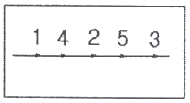
- 대칭법
- 후퇴법
- 전진법
- 비석법
(정답률: 알수없음)
93. 산소-아세틸렌 절단과 비교한 산소-프로판(LP)가스 절단의 설명으로 잘못된 것은?
- 절단 상부 기슭이 녹은 것이 적다.
- 절단면이 미세하여 깨끗하다.
- 슬래그 제거가 쉽다.
- 후판절단시 아세티렌보다 느리다.
(정답률: 알수없음)
94. 피복 아크 용접봉의 피복제에 습기가 있을 경우 용접시 발생하기 쉬운 대표적인 결함은?
- 언더 컷
- 용입불량
- 오버 랩
- 기공
(정답률: 알수없음)
95. 각 장치가 유기적인 관계를 유지하면서 미리 정해 놓은 시간적 순서에 따라 순차적으로 제어하는 제어 방법은?
- 시퀀스 제어
- 피드백 제어
- 수동 제어
- 온 오프 제어
(정답률: 알수없음)
96. 레이저 용접의 특징에 대한 설명으로 틀린 것은?
- 용접재의 기계적 성질에 많은 변화를 준다.
- 광선이 용접의 열원이다.
- 열의 영향범위가 좁다.
- 원격 조작이 용이하다.
(정답률: 알수없음)
97. 높은 진공 속에서 용접을 진행하므로 대기와 반응하기 쉬운 재료도 용접이 가능한 용접법은?
- 초음파 용접
- 전자빕 용접
- 프라즈마 용접
- 레이져 용접
(정답률: 알수없음)
98. 초음파 탐상시험을 양쪽에서 할 때의 기호로 적당한 것은?
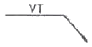
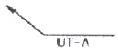
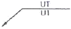
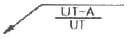
(정답률: 알수없음)
99. 일명 충돌용접이라도고 하며 극히 짧은 지름의 용접물 접합에 사용되고 전원으로 축전된 직류를 사용하는 용접법은?
- 만능 심 용접
- 업셋 용접
- 퍼커션 용접
- 플래시 버트 용접
(정답률: 알수없음)
100. 연납용 용제는 어느 것인가?
- 염화아연
- 붕사
- 붕산염
- 염화물
(정답률: 알수없음)